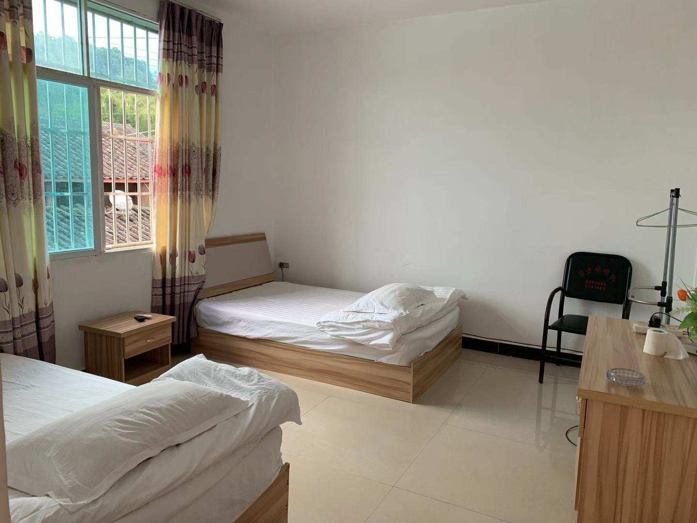

- Home
- Dashujiao Village and Elephants
- Progress of Coexistence Project
- Coexistence Worldwide
- Travel Guide
Which projects
1. Group with published work: Suitable for students who want to publish their work.
This project provides in-depth online guidance in the early stage, guidance for the revision of results in the field research period, and guidance for the improvement and publication of results in the later stage. Students will join a research team of 3-5 people according to the topics they are interested in, complete the research results and publish them.
Duration of course study and online research: one month prior to field research (about 5-8 hours per week)
Field research period: 7 days
Public welfare action period: one month after the field survey
(1)Science and Engineering Group
Suggested topic: How can science and technology help wildlife conservation work?
Related majors: Ecology, Environmental Science, Computer Science, Engineering, etc.
Project introduction: Students in the group will conduct online research on the application of science and technology to wildlife conservation efforts around the world (relieving human-elephant conflicts with elephant-deterrent lights, biodiversity monitoring with an infrared camera, anti-poaching with the unmanned aerial vehicle, etc.). They will research the actual condition of the village, record it in research articles and discuss how to reduce human-elephant conflicts in Yunnan Province by technology innovation. Students will also have the opportunity to practice technological innovation in solar elephant-deterrent lights and APPs.
(2)Humanities and Social Sciences Group
Suggested topic: How can we promote wildlife conservation from the perspective of humanities and social sciences?
Related majors: Sociology, Anthropology, Public Policy, Journalism, Communication, Art Design, Psychology, Education, etc.
Project introduction: Students in this group will conduct online research on how NGOs around the world use humanities and social science tools to protect wildlife (how to mitigate human-animal conflicts through community work, how to raise public awareness of wildlife protection through education, how to develop policies to promote harmony between humans and wildlife, etc.). In the field research, They will investigate the current situation and challenges of villagers in economic development, education, gender equality and non-genetic inheritance. They will collect stories between people and elephants in the village, and present them in research articles, documentaries, art, design, photographic collections. In the follow-up period of public welfare action, they will carry out the public interest publicity to encourage more people to pay attention to Dashujiao Village and offer help as they can.
(3)Business group
Suggested topic: How to achieve the objectives of wildlife conservation with commercial means?
Related majors: Business Administration, Marketing, International trade, etc.
Project Introduction: Students will study how global NGOs use business methods to protect wildlife (through tourism, agriculture, cultural and creative product sales, etc.), and go to the field to investigate the current situation of human-elephant conflicts and village economies. Then, market research will be conducted on the development of wildlife protection related cultural and creative products, research tourism and sales of agricultural products in Dashujiao Village, and research articles will be produced. Students will also have the opportunity to practice commercial marketing, promote the creation of cultural and creative products, participate in the improvement and sales of tourism products and agricultural products, and even create a unique brand for public welfare, and try to promote it at home and abroad.
2. Experience group:Suitable for students with lower requirements for results and regard experience as the main purpose
All participants from the experienced group will form a team and complete a research report on the status quo and challenges of human-elephant conflict in Yunnan Province (not to be published) through the field research that is consistent with the itinerary of the achievement group.
Study period: according to the time and interest of students, students can arrange their own courses learning
Field research period: 7 days
Public welfare action period: one month after the field survey (students can choose to participate according to their time and interests)
3. Personalized results: If you need to complete individual results rather than group results, you can communicate with the consultant to customize your personal research project.
What you can gain:
· An academic and professional research work
Our previous works have been published on top platforms at home and abroad, including national journals, academic research platforms of American universities, policy media platforms, top public welfare information platforms, etc.

· A public service experience with real social impact
Among students in the past, some have participated in African wildlife protection work, or shortlisted for the United Nations Youth Defender of the Earth Award, or built a China-Africa fair trade platform to help women in African slums, or became the author of a book with a preface by Jane Goodall.
· An opportunity to build a public welfare project base together
· A guidance plan for long-term sustainable public welfare projects
Project supervisor of recommendation | international recognition certificate | | all-round skills upgrading|like-minded friendships
What requirements do you need to meet to participate in the project?
Achievement group: senior high school students and college students; No English requirement; invest more than 5 hours per week in the early and late stages; Interview needed
Experience group: junior high school students to working people; No English requirement; Participated in the whole process of field research; Interview needed
Enrollment Number of each period: 8-20 students, rolling admission until filled
Field research: 7 days
Project schedule
Duration of course - one month prior to field research
· Background reading
Students will read the Chinese and English books and literature prepared by the tutor and watch relevant documentaries to develop an in-depth understanding of the topic.
· Study professional courses
Students will arrange their own time, systematically learn the recorded courses and public welfare project instruction manuals, build a deep understanding of public welfare, and master the basic knowledge and skills of conducting research and public welfare projects, including:
(1) Introduction to Public Welfare: How to Avoid Common Mistakes and Understand Public Welfare from an International Perspective?
(2) Research Methods: How to complete the topic selection, desk research, interview, questionnaire survey and other work professionally?
(3) How to understand international wildlife protection?
(4) Public Interest Communication Course: How to do public welfare storytelling through writing, speeches, videos, etc.?
(5) Travel Safety Lesson: How to protect yourself on the trip?
(6) Career Planning: How to plan your career and pursue a rewarding, interesting and meaningful life?
(7) Networking class: How to networking and get help for yourself and your project?
(8) Fundraising for Public Welfare: How to raise money for public welfare?
(9) Project Management Course: How do teenagers do project management?
(10) Project Evaluation: How to evaluate the effects of public welfare projects?
· Three live lectures (provided to the achievement group only)
The tutor will lead the students of the achievement group to carry out online research, guide the students to confirm the topic, follow up students' research progress and give targeted guidance, write the interview outline, and guide the students to complete the online research results through online workshops (each time lasts 1.5 hours), so as to make full preparations for the field research.
Field research period - lasting for one week. The following schedule is for reference.
Day 1: Arrive in Pu 'er, go to Dashu Foot Village, and check in. In-depth one-to-one communication with the tutor; Icebreaking activity and simulated interview workshop; Group project meetings
Day 2: Investigate the basic information of local elephant conflicts. In the morning, interview the village cadres to understand the human-elephant conflict and its impact. In the afternoon, interview villagers in Dashujiao Village to understand their attitude towards wild elephants.
Day 3: Investigate wild elephant activities and current response mechanism. In the morning, observe wild elephants from a distance to understand the current monitoring mechanism for preventing human-elephant conflicts; In the afternoon, interview the villagers of nearby Manlaojie Village to understand their attitude towards wild elephants and the measures taken by the villagers to alleviate the conflicts.
Day 4: Investigate the specific damage caused by wild elephants and the reasons behind it. In the morning, follow the insurance operator to visit the homes affected by wild elephants, and conduct in-depth interviews about the impacts on the villagers. In the afternoon, learn the insurance compensation mechanism, achievements, and challenges from the insurance loss operator.
Day 5: Summarize research findings and plan public welfare actions. In the morning, hold a seminar with villagers' representatives, summarize research findings through group presentation, and discuss the contribution that young students can bring to local elephant conflicts; In the afternoon, summarize and sort out the research results, complete the first draft of research articles, videos and other works, and design the public welfare action plan.
Day 6: Conduct public practice according to the subject of this group. Conduct scientific and technological innovation practice, including the installation and improvement of elephant-deterrent lights; participate in the practice of "sharing with elephants" public agricultural products and carry out public benefit marketing; publicity and implementation of public welfare communication programs; completed the second draft of research articles, videos and other works.
Day 7: Achievements presentation. Tutors issue certificates to students and guide them to carry out public welfare practice. Return.
Public welfare action period - one month after field research
· Design and implementation of public welfare actions
Based on solid field research results and professional skills guidance, participants will carry out follow-up public welfare activities, such as public welfare design, public welfare publicity, public welfare fundraising, etc., to create real and sustainable impact.
· Publish research works (provided to the outcome group only)
Excellent works will have the opportunity to be recommended for submission and published to influential academic, public welfare, and media platforms at home and abroad.
· Letter of recommendation
The project tutor will provide recommendation letters for outstanding students, and particularly outstanding students will have the opportunity to get the recommendation letter from the project founder.
· Personal review sharing
We encourage students to write personal review articles about their research and public welfare experiences. Excellent articles will have the opportunity to be published on relevant new media platforms.
· Long-term public welfare action planning
We also encourage students to use this project as a starting point to plan their activities for the next one to two years and continue to write their own stories of philanthropy. Each student will receive individual activity planning advice tailored by the tutor.
Feedback from students
Student Zhu, from Shanghai Weiyu International School
I feel I have actually experienced the feeling of an investigation this time, which is more complicated but also more interesting than I imagined before. The most rewarding thing is finding that writing an article is not as difficult as I thought. As long as you start writing and stick to it, you can complete a good article. In addition, I got to know great teachers and a lot of super interesting classmates, which was also a great harvest.
Student Tong, from Shanghai Pinghe School
After participating in this project, I felt that I had spent a very fulfilling week. In this week, I completed everything very efficiently and got the improvement of my ability, so I felt a sense of achievement. I also learned a lot from communicating with my classmates, and I learned a lot about elephants so that I could apply it to other circumstances. At the same time, this activity enriched my activities and made me feel more confident about applying for university.
Transportation and accommodation arrangements
Traffic
We will provide students with ticket purchasing advice (air ticket, high-speed train ticket, etc.), ticket purchasing service, and airport/station pickup service, and arrange reasonable travel for students.
Diet
We will provide students with a safe, healthy, nutritious and balanced diet, mainly local characteristics of home cooking.

Accommodation
We will provide students with clean and tidy accommodation with local characteristics, located in a safe area free of elephants.
Security
Safety Instructions and Code of Conduct
We will provide detailed "Safety Instructions and Code of Conduct Guidance" to trainees, including safety precautions, code of conduct, emergency contact information, etc., to ensure the personal safety of trainees.
Safety training session
Safety training sessions will be held at the start of the field project to emphasize the matters needing attention in the project and to strengthen the safety awareness of the trainees themselves.
Investigations of the project in advance
The tutor has made many detailed inspections on each project base to ensure the safety and quality of the project site.
Accompanied by tutors in the whole process
The tutor will be fully involved in the preparation and field research of the project. During the field study, the tutor will contact the parents of the students every day and synchronize the field study schedule, photos, and other text messages in real-time.
Insurance and disease prevention
Tutors will purchase insurance for each student and prepare common medicines and medical kits for each program. During the field research, if there is an emergency, the tutor will accompany the students for medical treatment for the first time.
Q&A
Which groups of students are involved in the project?
The participants in our research project are mainly high school students and college students, and the proportion varies slightly according to different project themes. During the interview process, the tutor will get to know the basic information of the student and match the most suitable project for the student. Previous programs include high school students from World United College in Changshu, Beijing No. 4 High School, Hangzhou Foreign Languages School, Chengdu No. 7 High School, Shenzhen Vanke Meisha Academy, as well as students from Fudan University, Nanjing University, Emory University, Cornell University, and other well-known universities. Students will be able to communicate and grow with many outstanding students in the program.
Are the project teams’ itineraries the same? How would tutors make it if the itineraries are different?
The social issues investigated by students often involve interdisciplinary knowledge, and different groups just start from different subdivided perspectives. In order to ensure the safety of the students and to facilitate communication and cooperation between the different groups, the itineraries for the group project are generally the same. We will match enough tutors and teaching assistants to help each group carry out their own targeted research work.
Can we really learn something in such a short time spent on field research?
During the field research period, the study and work intensity are very heavy. Under the careful arrangement of the tutor, the students will have a very substantial schedule from morning till night. In addition, the field research trip is only a part of the project, the whole project cycle is about two months. One month before departure, the tutor will focus on teaching students research methods and lead students to carry out online research. One month after the completion of the field project, the tutor will guide the students to refine the final research results, and also guide the students to design and execute public welfare projects in combination with their own strengths.
Does participating in the project help our application for further education?
Students can learn professional public interest knowledge, master research skills, complete high-quality project results, receive project certificates and receive letters of recommendation. Many of the students have followed up with one or two years of charity work. These experiences helped them apply to Princeton University, Columbia University, the University of Pennsylvania, Cambridge University and other prestigious universities.
Some students might have classes in the evening. Can they participate in the project?
In the online course before the field survey, the tutor will count the time of each student and coordinate the arrangement so that all students can participate in the online course as much as possible. If the student is unable to attend the course due to temporary affairs, the tutor will also record the course and send it to the student separately to help the student keep up with the learning progress.
If we are unable to travel due to the epidemic, will you refund the fare?
The safety and health of our students are our primary objective. On the one hand, we are paying close attention to the situation of the epidemic across the country and keeping in touch with local public welfare organizations to ensure that we are informed of the situation of the epidemic in the project areas and take action as soon as possible. On the other hand, we have also prepared masks, temperature guns, hand sanitizers and other epidemic prevention materials and basic medicines for the students to ensure their health during the field stay. If there is an outbreak before departure, we will immediately communicate with the parents and provide alternative plans, refunds, or extensions as the case may be.
WeChat Contact: For details, please get in touch with our staff.